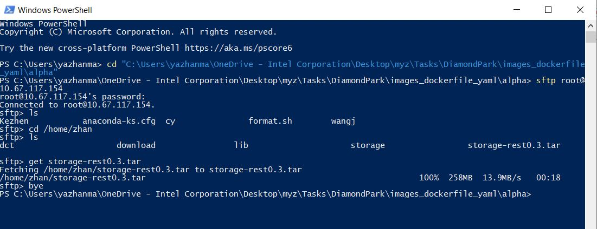

windows 自带 fstp, 可以打开 powershell or cmd 输入 sftp 查看命令提示.
FTP traffic is not encrypted. For a secure data transfer, use SCP or SFTP
SFTP (SSH File Transfer Protocol) is a secure file protocol that is used to access, manage, and transfer files over an encrypted SSH transport.
When compared with the traditional FTP protocol, SFTP offers all the functionality of FTP, but it is more secure and easier to configure.
Unlike SCP , which supports only file transfers, the SFTP allows you to perform a range of operations on remote files and resume file transfers.
In this tutorial, we will show you how to use the Linux sftp command
# Before you Begin
To open an SFTP connection to a remote system, use the sftp command followed by the remote server username and the IP address or domain name:
When transferring large files, it is recommended to run the sftp command inside a screen or tmux session.
++ The directory from where you run the sftp command is the local working directory. ++
在 windows 上打开 powershell or cmd 先 cd 到指定目录在执行 sftp 命令 ，如 cd "C:\Users\User\OneDrive - Intel Corporation\Desktop\Tasks\DiamondPark\images_dockerfile_yaml\alpha"

# Establishing an SFTP connection
SFTP works on a client-server model. It is a subsystem of SSH and supports all SSH authentication mechanisms.
To open an SFTP connection to a remote system, use the sftp command followed by the remote server username and the IP address or domain name:
sftp remote_username@server_ip_or_hostname |
If you are connecting to the host using password authentication, you will be prompted to enter the user password.
Once connected, you will be presented with the sftp prompt, and you can start interacting with the remote server:
Connected to remote_username@server_ip_or_hostname. | |
sftp> |
If the remote SSH server is not listening on the default port 22 , use the -P option to specify the SFTP port
sftp -P custom_port remote_username@server_ip_or_hostname |
# SFTP Commands
Most of the SFTP commands are similar or identical to the Linux shell commands.
To get a list of all available SFTP commands, type help, or ?.
sftp> help |
# Downloading Files with the SFTP Command
To download a single file from the remote server, use the get command:
sftp> get filename.zip |
If you want to save the downloaded file with a different name, specify the new name as the second argument:
sftp> get filename.zip local_filename.zip |
To download a directory from the remote system, use the recursive -r option:
sftp> get -r remote_directory |
If a file transfer fails or is interrupted, you can resume it using the reget command.
The syntax of reget is the same as the syntax of get:
sftp> reget filename.zip |
# Uploading Files with the SFTP Command
To upload a file from the local machine to the remote SFTP server, use the put command
sftp> put filename.zip |
If the file you want to upload is not located in your current working directory, use the absolute path to the file.
To upload a local directory, you would type:
sftp> put -r locale_directory |
To resume an interrupted upload:
sftp> reput filename.zip |
# File Manipulations with SFTP
SFTP allows you to perform some basic file manipulation commands. Below are some examples of how to use the SFTP shell:
- Get information about the remote system’s disk usage :
sftp> df | |
Size Used Avail (root) %Capacity | |
20616252 1548776 18002580 19067476 7% |
- Create a new directory on the remote server:
sftp> mkdir directory_name |
- Rename a file on the remote server:
sftp> rename file_name new_file_name |
- Delete a file on the remote server:
sftp> rm file_name |
- Delete a directory on the remote server:
sftp> rmdir directory_name |
- Change the permissions of a file on the remote system:
sftp> chmod 644 file_name |
- Change the owner of a file on the remote system:
sftp> chown user_id file_name |
You must supply the user ID to the chown and chgrp commands.
- Change the group owner of a remote file with:
sftp> chgrp group_id file_name |
Once you are done with your work, close the connection by typing bye or quit .